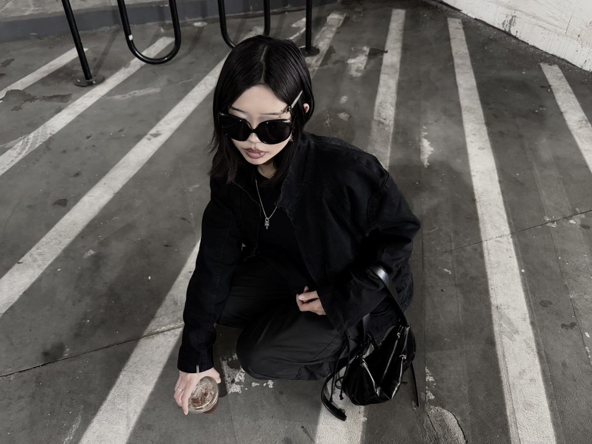

UI/UX + Graphic Design

Brand + Marketing

Editorial Design

Event Production
[N] attendees

I'm a multidisciplinary designer based in Los Angeles / Orange County with an expertise in design and production.
Education
UC San Diego
B.S. in Cognitive Science
Design & Interaction